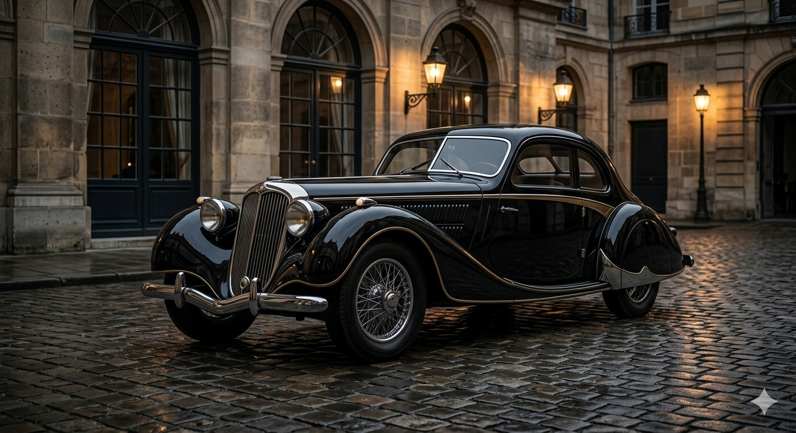
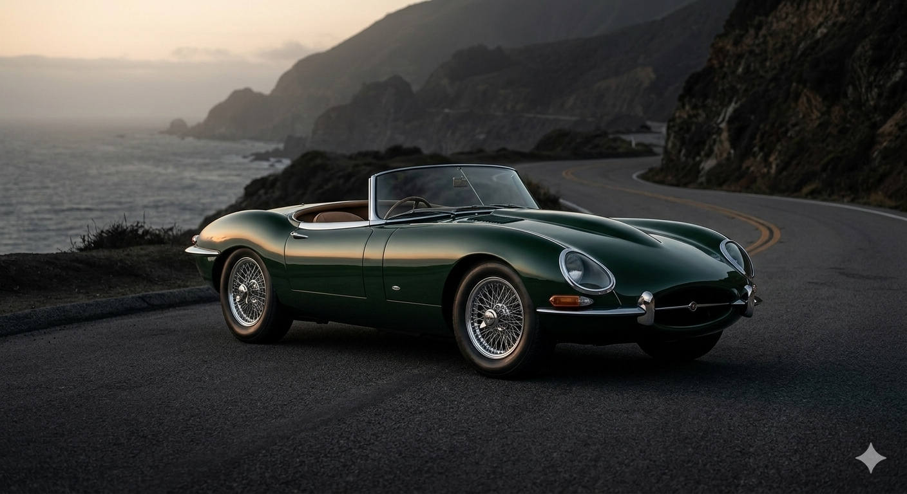
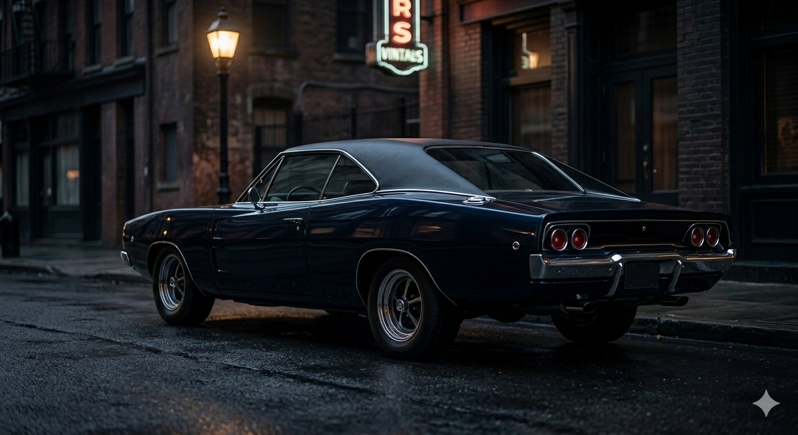

En Classic Motors nos dedicamos a ofrecer vehículos nuevos y seminuevos de alta calidad, brindando a cada cliente una experiencia de compra confiable, transparente y personalizada. Nuestro compromiso es ayudarte a encontrar el automóvil ideal que se adapte a tu estilo de vida y necesidades, acompañándote en cada paso del proceso con asesoría profesional y planes de financiamiento accesibles.
- Venta de vehículos nuevos
- Venta de vehículos seminuevos certificados
- Planes de financiamiento flexibles
- Compra de vehículos usados
- Asesoría personalizada
- Garantía y respaldo en cada compra
HISTORIA
| Año / Etapa | Descripción |
|---|---|
| 2016 – Nuestros Inicios | Classic Motors nació como un pequeño negocio familiar en Medellín, enfocado en la compra y venta de vehículos usados con honestidad y compromiso. |
| 2019 – Crecimiento y Confianza | Gracias a la recomendación de nuestros clientes, ampliamos nuestro inventario e incorporamos vehículos nuevos y planes de financiamiento accesibles. |
| Hoy – Compromiso y Calidad | Nos consolidamos como un concesionario confiable, ofreciendo vehículos certificados, asesoría personalizada y acompañamiento en cada proceso de compra. |
GALERIA
 |
 |
 |
 |
 |
 |
NUESTROS PRODUCTOS ESTRELLA

El Gran Turismo de Pre-Guerra
Descripción: Un coupé de lujo de los años 30, de color negro azabache pulido. Esta imagen captura la esencia del logo que creamos. El coche está estacionado sobre adoquines húmedos frente a una arquitectura clásica de piedra arenisca, bajo la luz suave de un atardecer nublado. Las líneas aerodinámicas y los detalles cromados brillan sutilmente contra la carrocería oscura. Es la elegancia pura.

El Roadster Deportivo de los 50s
Descripción: Para variar un poco la oferta, presentamos un roadster deportivo descapotable de mediados de los años 50. Es de un color verde británico de carreras muy oscuro, casi negro bajo la sombra, con un interior de cuero color tabaco que resalta. El coche está estacionado en una carretera costera sinuosa al amanecer, con la niebla baja sobre el mar oscuro en el fondo. Esta imagen transmite velocidad clásica y sofisticación.

El Muscle Car Ejecutivo de los 70s
Descripción: Finalmente, para cubrir una era diferente, un muscle car ejecutivo de principios de los 70, como un imponente coupé con carrocería "coke-bottle". Es de un color azul medianoche profundo, casi negro, con un techo de vinilo oscuro. La imagen es un primer plano agresivo de la parrilla delantera y los faros dobles, estacionado en una calle urbana oscura y húmeda por la noche, reflejando las luces de neón distantes de la ciudad en su pintura oscura pulida. Esta imagen aporta músculo y presencia al inventario.